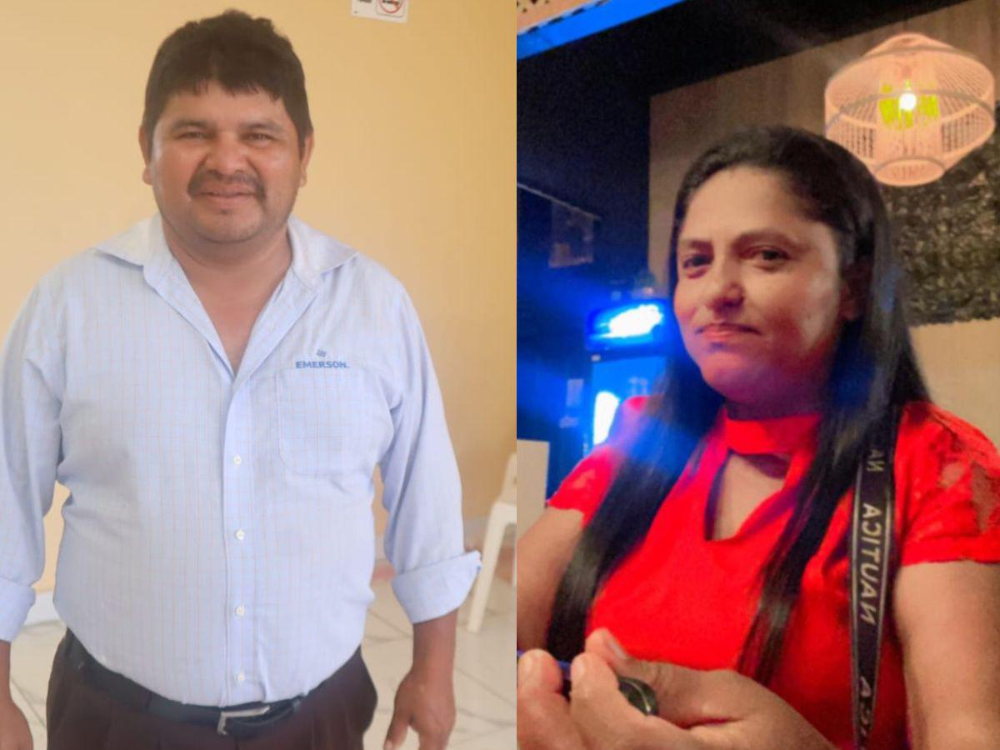

Última noticia

Mujer introdujo droga en un niño para ir a la carcel de Honduras.
Con la despiadada y absurda complicidadde su propia madre, un niño de dos años
de edad sirvió de mula para ingresar un bultode marihuana introducido en su ano.
Leer más
Noticia destacada

Esposo de pastora asesinada a machetazos: "Me han quitado la mitad de mi.
El esposo de la pastora relata el dramatico momento en que la pastora fue asesinada
por robarle en la aldea Chacalapa, Trujillo, Colón
Leer más
Sobre Ventas
El precio de los SSDs va a subir hasta en un 25%
El mercado de los SSDs va a experimentar una nueva subida de precio que podría llegar hasta un 25%. Esta será la consecuencia directa de una subida del precio de los contratos de memoria NAND Flash en el segundo trimestre del año.
Leer más
Sobre Tecnologia
Windows 10 gana cuota a costa de Windows 11 y Linux retiene el 4% en el escritorio
La trayectoria de Windows 11 no está siendo todo lo brillante que se podría esperar. La última versión del sistema operativo de Microsoft va ganando terreno frente a su predecesor, pero lo hace lentamente y no siempre de manera constante.
Leer más
Espectaculo
En abril Honduras vivirá, por primera vez, la magia del Reino Encantado
Una puesta en escena única, llena de efectos especiales y voces en vivo, así es la magia del Reino Encantado que reúne a los musicales favoritos de toda la familia
Leer más
Cantantes Famosos

Rosalía y Hunter Schafer: Un amor fugaz de cinco meses
La actriz Hunter Schafer ha confirmado en una entrevista a la revista GQ su relación con la cantante Rosalía.
Leer más